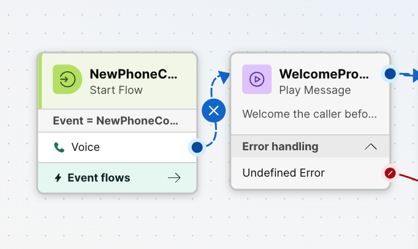
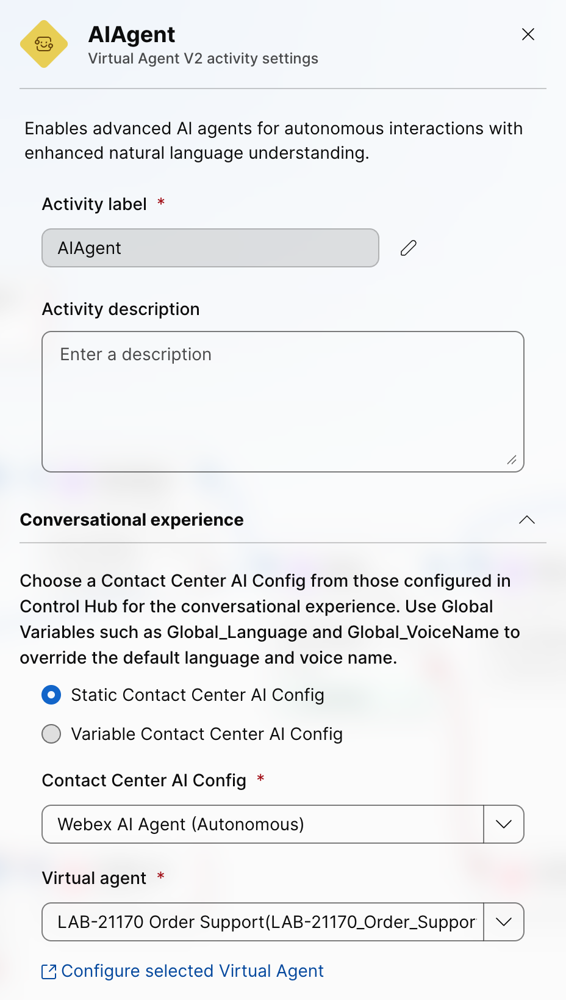
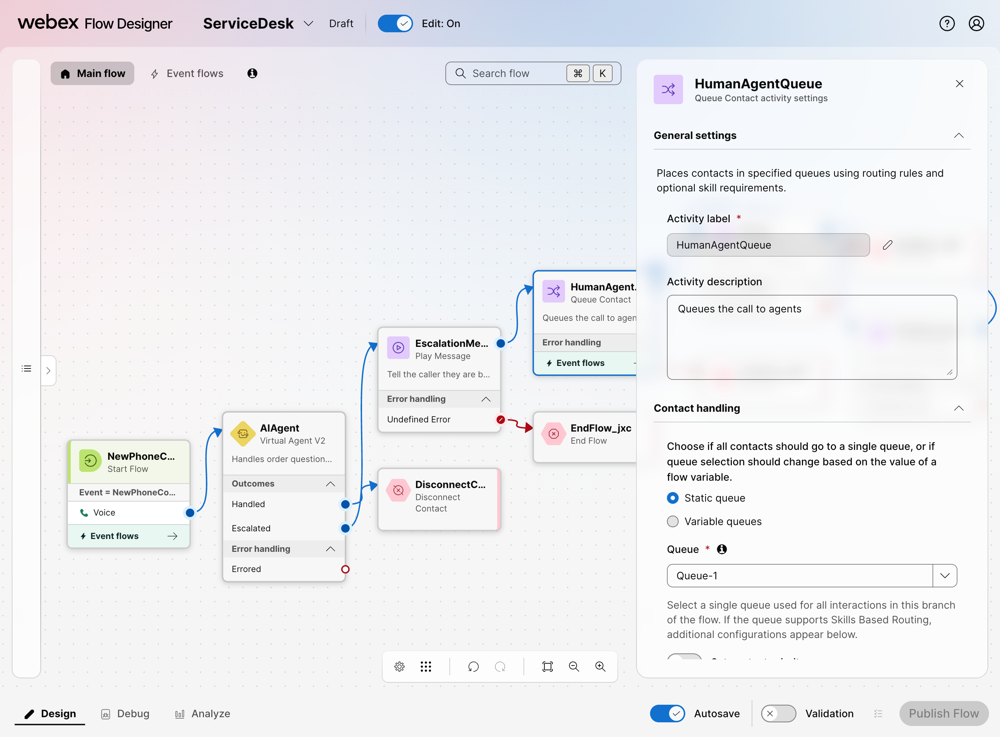
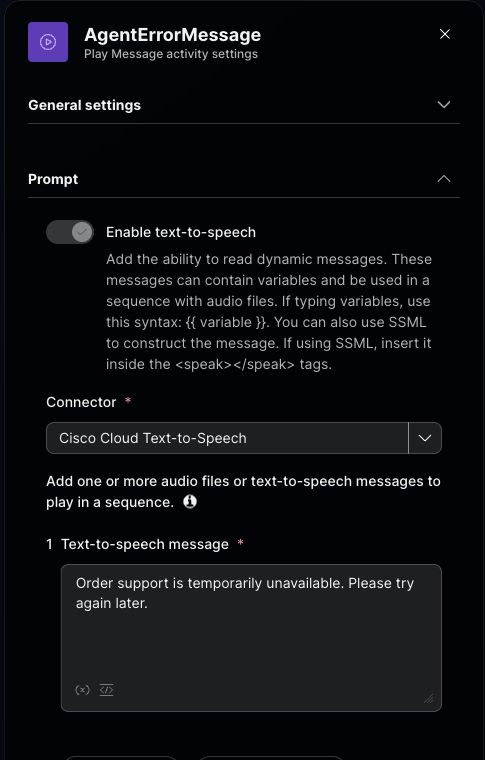
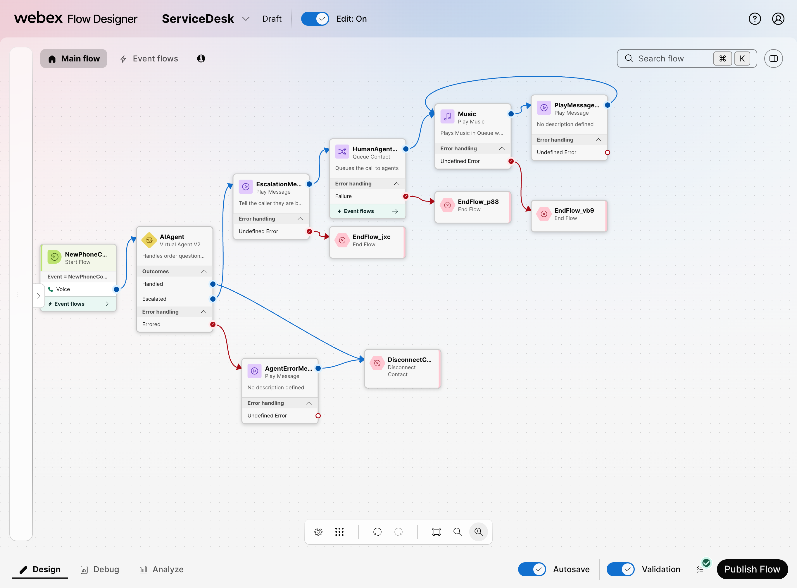
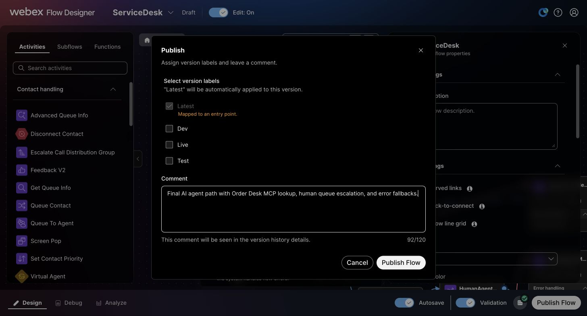
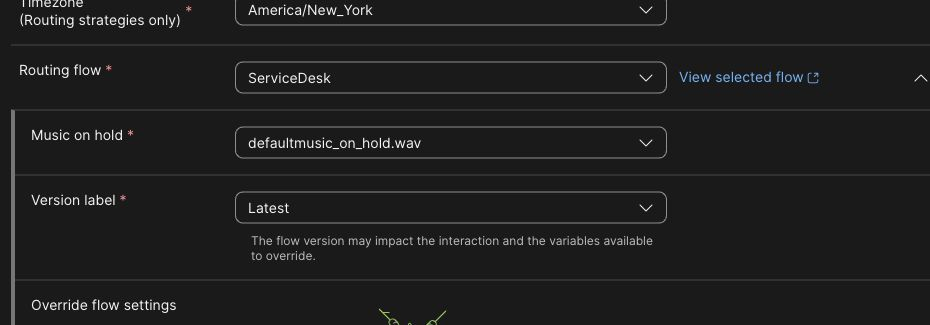

Checkpoint 9: Attach the agent and test end to end
Replace the starter's menu and direct REST branch with your published AI agent. Repurpose its welcome message for the human handoff, and keep its queue and wait treatment. After publishing, verify the order lookup and human handoff by phone. Your published version number may differ from the reference captures below.
Before starting, confirm that lookup_order succeeds in AI Agent Studio Preview and the agent shows Published. In Preview, ask for general support, accept the offer of a human agent, and check Sessions for Agent handover. This checks the agent action; the phone test below checks the voice queue. If the MCP action is missing, finish Checkpoint 6 first.
Replace the starter caller path
- Return to the
ServiceDeskFlow Designer tab you used in Checkpoint 3 and turn Edit on. If you closed the tab, open Control Hub, go to Contact Center → Customer Experience → Flows → Manage Flows, and open your importedServiceDeskflow. If you gave the flow a different name on import, open that flow instead. -
Hover over the connector from
NewPhoneContacttoWelcomePromptand click the X that appears on the line. KeepWelcomePrompton the canvas; you will reuse it for the human handoff.
Click the X on the connector, not the activity. -
Find Virtual Agent V2 under Contact handling and drag it onto the canvas.
- Drag from the blue output port on
NewPhoneContactto the Virtual Agent V2 activity before configuring it. -
Select the new activity and set Activity label to
AIAgent. Keep Static Contact Center AI Config selected, choose Webex AI Agent (Autonomous) for Contact Center AI Config, and choose your publishedLAB-21170 Order Supportfor Virtual agent. Wait for Autosave, then reopen the activity to confirm both selections persisted.
Set the activity label, AI config, and published virtual agent after connecting the start activity. Select the image to enlarge it. -
Add a Disconnect Contact activity labeled
DisconnectContact, or reuse one already on your canvas. Connect theAIAgentHandled outcome to it. -
Select the imported
WelcomePromptPlay Message activity. Change its Activity label toEscalationMessageand its description toTell the caller they are being connected to a human agent.Keep Cisco Cloud Text-to-Speech selected and replace the existing welcome text with:I'll connect you with a human agent.This activity already has a text-to-speech prompt, so you do not need to add another Play Message or audio row.Replace the prompt in the reused WelcomePromptbefore connecting it to the queue. -
Hover over the connector from
EscalationMessagetoSupportMenuand click its X. Delete the oldSupportMenu,GetOrder,OrderStatusMessage, andMenuFallbackMessageactivities. This also removes the direct HTTP request and its temporary Authorization header. Keep the importedQueue,Music,PlayMessage_c24, and their connected End Flow activities. -
Reuse the imported
Queue(Queue Contact) activity. Rename itHumanAgentQueueand confirm Voice → Static queue → Queue-1. ConnectAIAgentEscalated → EscalationMessage → HumanAgentQueue. IfQueue-1is unavailable, stop here and check the assigned queue before publishing.
Confirm Static queue and Queue-1 in the reused Queue Contact. This capture was taken while wiring the flow; compare the completed layout with the image after step 13. -
Keep the imported
HumanAgentQueue → Music → PlayMessage_c24 → Musicwaiting loop as it is. The existingPlayMessage_c24prompt already tells the caller to wait; do not rename it. Leave the Queue Contact Failure output connected to its existing End Flow activity. An agent may answer before every waiting activity plays. -
Add a Play Message activity labeled
AgentErrorMessage. Enable text to speech, select Cisco Cloud Text-to-Speech, and enter:Order support is temporarily unavailable. Please try again later.If the new activity includes an empty Audio file row, remove that row so it does not block validation.
Set the AI agent Errored prompt. -
Connect the
AIAgentErrored outcome toAgentErrorMessage, then connectAgentErrorMessagetoDisconnectContact. -
Wait for Autosave, turn on Validation, and resolve any errors. Confirm 0 errors and check the final paths:
NewPhoneContact → AIAgent; Handled → DisconnectContact; Escalated → EscalationMessage → HumanAgentQueue → Music → PlayMessage_c24; and Errored → AgentErrorMessage → DisconnectContact. The imported Queue Failure link still reaches its End Flow activity.
Final draft layout after reconnecting all three AI outcomes. The three End Flow activities on red links are the starter's retained error paths; the blue Handled and Errored paths meet at DisconnectContact. Select the image to enlarge it.


Before you call
Confirm that your published flow is Latest and your assigned entry point routes to ServiceDesk Latest. Validation confirms the wiring; the two phone tests below confirm what callers experience. Use a phone or a Webex desktop client with external calling enabled. Studio Preview and browser-only Call on Webex cannot verify the inbound queue path.
Publish and test the final caller path
-
Select Publish Flow after validation. In the dialog, Latest is applied automatically; optionally select Test and enter a comment such as
AI agent with human queue. Select Publish Flow, then confirm the new version is Latest in version history.
Check Latest, add an optional label and comment, then select Publish Flow. -
In Control Hub, go to Contact Center → Customer Experience → Channels and reopen the assigned Inbound Telephony entry point from Checkpoint 3. Confirm that Routing flow is
ServiceDeskand Version label isLatest. In Flow Designer version history, confirm that Latest is on your newly published version. If the entry point uses an older fixed label, update the routing assignment before calling.
Set Routing flow to ServiceDeskand Version label toLatest. -
Call the same inbound phone number used in Checkpoints 2 and 3.
- Say:
I need an update on order ORD-10482. - If the agent asks for the order number, provide
ORD-10482. - Confirm that the agent retrieves the order data through the external action and explains the status and delivery information.
- Make a second call and say:
I need general support.When the agent offers a human handoff, say:Yes, please connect me to a human agent.Confirm thatEscalationMessageplays and the call entersQueue-1. If a test agent is available, answer in Agent Desktop. Otherwise, listen for the wait treatment. - In Debug, inspect both Interaction IDs. Confirm the order call reached
AIAgentand the general-support call followedAIAgent → EscalationMessage → HumanAgentQueue. If the caller waited, confirm the trace continued throughMusic → PlayMessage_c24. The Queue Contact Failure branch retains its imported End Flow connection.


Compare your order call
For the order call, check Voice Sessions for a successful lookup_order request with orderNumber set to ORD-10482. In Debug, confirm the call reached AIAgent and ended after the answer. Compare the spoken status and delivery date with the current Order Desk result, which may differ from older captures. If the agent ends the call, Debug may show Handled → DisconnectContact → ContactEnded.

lookup_order for ORD-10482 successfully. The crop excludes the returned customer details.
Compare your general-support call
For the general-support call, accept the human handoff and listen for queue music. In Debug, confirm AIAgent → EscalationMessage → HumanAgentQueue → Music → PlayMessage_c24 if the caller waits long enough for the message. Queue music confirms wait treatment; the trace does not show a human agent answering.

HumanAgentQueue. Caller and interaction identifiers are excluded.Target caller path:
Caller → ServiceDesk → AIAgent
├─ Order request → lookup_order (MCP) → response → Handled → disconnect
├─ General support → offer human → caller accepts → Escalated
│ → EscalationMessage → HumanAgentQueue (Queue-1)
│ ├─ Waiting → Music ↔ PlayMessage_c24 (until a human answers)
│ └─ Failure → existing End Flow
└─ Errored → AgentErrorMessage → disconnect
Check both caller paths
- In Debug, confirm the published flow starts
NewPhoneContact → AIAgent(the start event may display asNewContactin the interaction trace). Your final flow contains the reusedEscalationMessage, but noSupportMenu,GetOrder, orOrderStatusMessage. - On the order call, listen for the spoken status and delivery information. In Sessions, confirm the
lookup_orderaction succeeded. - On the general-support call, accept the human offer. Listen for
EscalationMessageand queue treatment, then confirmAIAgent → EscalationMessage → HumanAgentQueuein Debug. An available test agent can answer. - The imported Queue Contact Failure output still leads to its End Flow activity; no new queue-error message is needed.
- The Errored branch is connected to
AgentErrorMessage → DisconnectContact; test it only with a controlled agent error.
Before marking this checkpoint complete
Complete both phone calls and inspect their paths in Debug. Confirm the order response and the human queue handoff on your published flow.
Optional: explore Contact Center MCP
After completing the phone tests, ask your facilitator whether your sandbox has access to Webex Contact Center MCP. If it does, follow the bonus exercise to connect with your sandbox Webex account, inspect ServiceDesk, and optionally edit an activity description in a separate unpublished copy. This is a separate connection from Order Desk. Keep your completed flow and its routing unchanged.